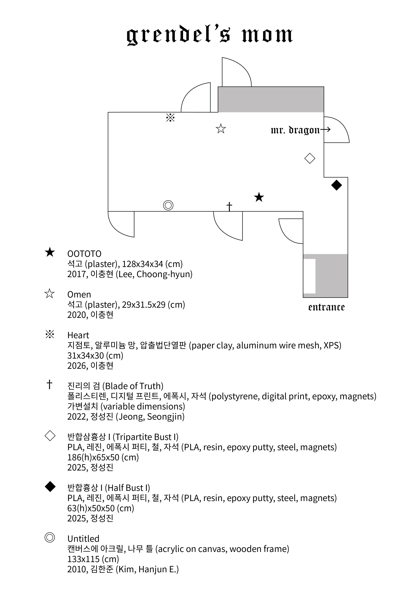
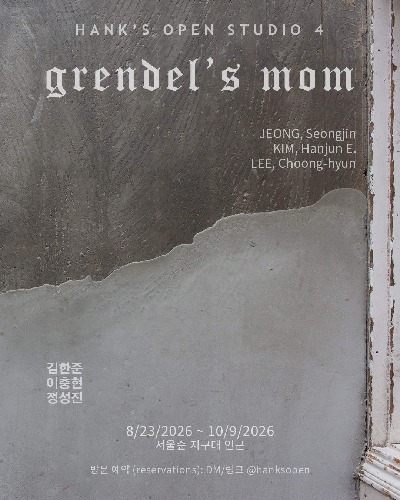

artist-run space in Seoul, ROK


참여작가
김한준 @hanksopen
이충현 @ipbangche
정성진 @diny_sj
『베오울프』는 고대 영어로 전해지는 가장 오래된 서사시로써 연구물 및 파생작이 축적된 작품이다. 특히 J. R. R. 톨킨이 1936년에 발표한 논문 "베오울프: 괴물과 비평가(Beowulf: the Monsters and the Critics)"와 존 가드너의 1971년 소설 『그렌델』은 당대의 『베오울프』 관련 연구 및 창작/비평으로서 기념비적 위상을 갖지만, 오늘날에도 시의성 있는 문제의식의 이동을 보여준다.
톨킨이 "괴물과 비평가"를 발표하기 이전의 학계에서는 『베오울프』를 역사적 자료로 다루었으니, 작 중 등장하는 괴물 그렌델 혹은 용 따위의 판타지적, 신화적 요소들은 사실관계를 규명하려는 관점에서 결함으로 여겨졌고, 이는 서사시 자체의 평가절하로 이어졌다. "괴물과 비평가"의 논지는 『베오울프』를 예술로서, 미적으로 접근했을 때야 비로소 그 역사적 의미가 드러나며, 작 중 괴물들은 그 미적 작용의 핵심 요소라는 것이다. 톨킨의 논문을 통해 『베오울프』의 작품성은 재평가된다.
《그렌델 엄마》는 "괴물과 비평가"의 내용에 그치지 않고 한발 더 나아가 괴물의 1인칭 시점을 묘사한 소설 『그렌델』 이후의 비평적 지형을 살피며 여성으로서, 그리고 그렌델의 기원이자 복수로서 『베오울프』에 등장하는 그렌델 엄마를 상상하며 2026년 여름 Hank's Open Studio에 다양한 작품들을 모아본다.